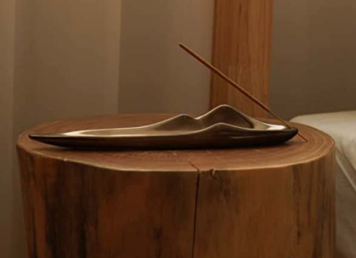
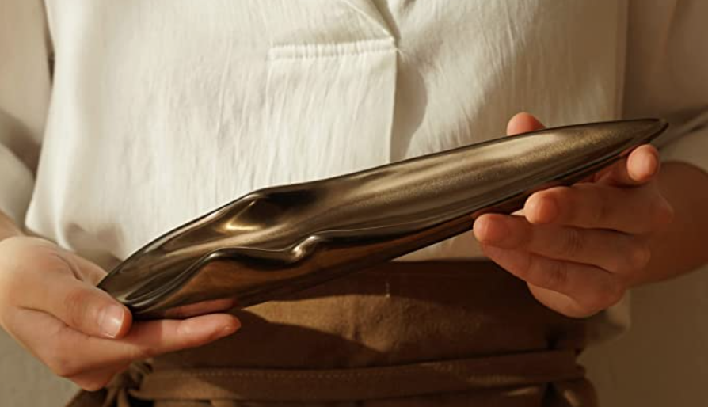

This handmade incense holder is made of 100% ceramic, which is heat resistant and easily washable. The design of the incense holder is inspired by the majestic and calming mountains in nature. Our craftsmen reflect the inspiration through a modern-sleek design.
Premium Ceramic Handcraft
Ideal Size as an Ash Catcher